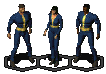

|
|
From the creators of Wastelandtm, comes a new breed of role-playing games: Fallout: A Post Nuclear Role Playing Game Set in the aftermath of a world-wide nuclear war, Fallout will challenge you to survive in an unknown and dangerous world. You will take the role of a Vault-dweller, a person who has grown up in a secluded, underground survival Vault. Circumstances arise that force you to go Outside -- to a strange world 80 years after the end of the modern civilization. A world of mutants, radiation, gangs and violence. Your immediate task is to find a replacement for the broken water purification controller chip. Without that chip, your fellow Vault dwellers are doomed to dehydration or be forced to leave the safety of the Vault for the Outside. The core of the game revolves around your character. When you start Fallout, you can choose or modify one of three pre-made characters, or create your own from scratch. The character creation system allows you to make a vibrant, unique character. We use a skill-based system to allow you to fine tune your character.  As you gain experience (roughly half from combat, the other half is from solving adventure seeds and non-combat based events), your character will grow as you determine. No classes here!
Available now in North America! Europe and Australia later this year. Available for DOS, Win95 and Mac on CD-ROM.

This page and all contents Copyright 1996-1997 Interplay Productions. All Rights Reserved. Permission to duplicate the contents of this web page are granted for private, non-commerical use as long as all copyright notices remain intact. Fallout is Copyright 1997 Interplay Productions. Fallout is a trademark of Interplay Productions. All Rights Reserved.
|


 Combat in Fallout is tactical turn-based. You can take as much time as you need to make decisions. Choose from different types of attacks, with a variety of weapons and attack skills. Weapons include: shotguns, flamers, chain-guns, rocket launchers, sledgehammers, brass knuckles and more.
Combat in Fallout is tactical turn-based. You can take as much time as you need to make decisions. Choose from different types of attacks, with a variety of weapons and attack skills. Weapons include: shotguns, flamers, chain-guns, rocket launchers, sledgehammers, brass knuckles and more.